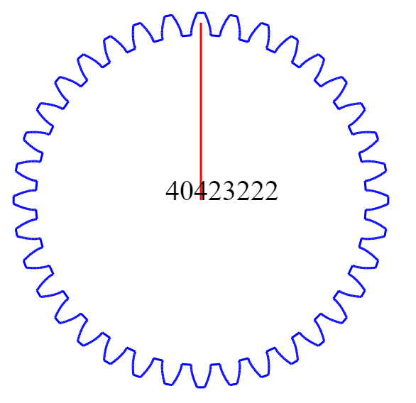
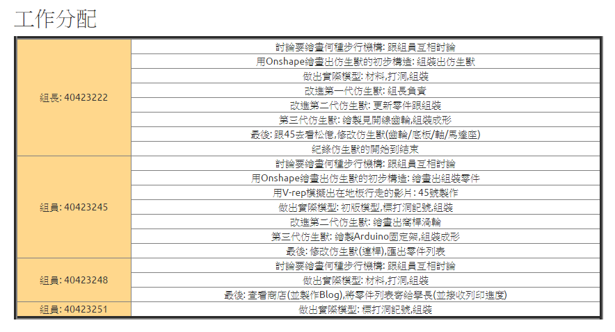

<!doctype html>
<html lang="en">
<head>
    <meta charset="utf-8">
<title>
2017 Spring 機械設計工程系協同產品設計實習
</title>
    <meta name="description" content="A framework for easily creating beautiful presentations using HTML">
    <meta name="author" content="Hakim El Hattab">
    
    <meta name="apple-mobile-web-app-capable" content="yes">
    <meta name="apple-mobile-web-app-status-bar-style" content="black-translucent">
    
    <meta name="viewport" content="width=device-width, initial-scale=1.0, maximum-scale=1.0, user-scalable=no">
    
    <link rel="stylesheet" href="https://cad-lab.github.io/cadlab_data/reveal/css/reveal.css">
    <link rel="stylesheet" href="https://cad-lab.github.io/cadlab_data/reveal/css/theme/black.css" id="theme">
    
    <!-- Theme used for syntax highlighting of code -->
    <link rel="stylesheet" href="https://cad-lab.github.io/cadlab_data/reveal/lib/css/zenburn.css">

    <!-- Printing and PDF exports -->
    <script>
        var link = document.createElement( 'link' );
        link.rel = 'stylesheet';
        link.type = 'text/css';
        link.href = window.location.search.match( /print-pdf/gi ) ? 'https://cad-lab.github.io/cadlab_data/reveal/css/print/pdf.css' : 'https://cad-lab.github.io/cadlab_data/reveal/css/print/paper.css';
        document.getElementsByTagName( 'head' )[0].appendChild( link );
    </script>

    <!--[if lt IE 9]>
    <script src="https://cad-lab.github.io/cadlab_data/reveal/lib/js/html5shiv.js"></script>
    <![endif]-->
</head>

<body>
<div class="reveal">
<!-- Any section element inside of this container is displayed as a slide -->
<div class="slides">
<section data-markdown>
    <script type="text/template">
## 2017Spring 協同產品設計實習

### 虎科大機械設計工程系

####第七組協同投影片

<small>
Created by [bg7](http://40423222.github.io/2017springcd_bg7/blog/)
</small>

[協同產品設計實習第七組課程網誌](blog/index.html)


    </script>
</section>


						
<section data-markdown>
    <script type="text/template">
# 投影片快捷鍵

* 利用箭頭上下前後換頁
* 按 f 鍵進入全螢幕模式 (full screen)
* 按 s 鍵可以顯示投影片筆記 (show)
* 按 o 鍵可以切換單張或全域檢視 (overview)
* 按 b 或 . 鍵可以切換螢幕黑屏 (black)
* 按 Esc 可以退出全螢幕或全域檢視 (Escape)

    </script>
</section>


						
<section>
<section data-markdown>
    <script type="text/template">
# 期中到期末的成果

網址: https://40423222.github.io/2017springcd_bg7/blog/category/course.html
    </script>
</section>


						
<section data-markdown>
    <script type="text/template">
# Onshape閱讀心得

1.小組協同閱讀兩本電子書翻譯並寫下心得
這裡為Onshape's Greatest Tech Tips– Volume 1.pdf

網誌: https://40423222.github.io/2017springcd_bg7/blog/Onshape%E9%96%B1%E8%AE%80%E5%BF%83%E5%BE%97.html
    </script>
</section>


						
<section data-markdown>
    <script type="text/template">
# 繪畫見開線齒輪

利用Onshape繪畫見開線齒輪

<iframe src="https://player.vimeo.com/video/217387017" width="640" height="316" frameborder="0" webkitallowfullscreen mozallowfullscreen allowfullscreen></iframe>

網誌: https://40423222.github.io/2017springcd_bg7/blog/%E6%BC%B8%E9%96%8B%E7%B7%9A%E9%BD%92%E8%BC%AA-Onshape.html
    </script>
</section>


						
<section data-markdown>
    <script type="text/template">
## 用指令繪畫齒輪



因為製作速度比拍影片快和輕鬆,也不怕網路不給利而Lag,再加上找起重點比看影片簡單,所以我決定不製作影片,而來製作筆記

網址: https://40423222.github.io/2017springcd_bg7/blog/15W-Code%20gear.html
    </script>
</section>


						
<section data-markdown>
    <script type="text/template">
## 行走機構

<iframe src="https://player.vimeo.com/video/217646271" width="640" height="316" frameborder="0" webkitallowfullscreen mozallowfullscreen allowfullscreen></iframe>

禮拜五才能拿到成品
    </script>
</section>


						
<section data-markdown>
    <script type="text/template">


網誌: https://40423222.github.io/2017springcd_bg7/blog/%E6%9C%9F%E6%9C%AB%E8%A8%88%E7%95%AB-%E8%A1%8C%E8%B5%B0%E6%A9%9F%E6%A7%8B.html
    </script>
</section>


						
<section data-markdown>
    <script type="text/template">
## 期末協同查驗與自評

網誌: https://40423222.github.io/2017springcd_hw/blog/2017springcd-final.html
    </script>
</section>


						
</section>
</div>

</div>

<script src="https://cad-lab.github.io/cadlab_data/reveal/lib/js/head.min.js"></script>
<script src="https://cad-lab.github.io/cadlab_data/reveal/js/reveal.js"></script>
<script>
        // More info https://github.com/hakimel/reveal.js#configuration
        Reveal.initialize({
            controls: true,
            progress: true,
            history: true,
            center: true,

            transition: 'slide', // none/fade/slide/convex/concave/zoom

            // More info https://github.com/hakimel/reveal.js#dependencies
            dependencies: [
                { src: 'https://cad-lab.github.io/cadlab_data/reveal/lib/js/classList.js', condition: function() { return !document.body.classList; } },
                { src: 'https://cad-lab.github.io/cadlab_data/reveal/plugin/markdown/marked.js', condition: function() { return !!document.querySelector( '[data-markdown]' ); } },
                { src: 'https://cad-lab.github.io/cadlab_data/reveal/plugin/markdown/markdown.js', condition: function() { return !!document.querySelector( '[data-markdown]' ); } },
                { src: 'https://cad-lab.github.io/cadlab_data/reveal/plugin/highlight/highlight.js', async: true, callback: function() { hljs.initHighlightingOnLoad(); } },
                { src: 'https://cad-lab.github.io/cadlab_data/reveal/plugin/zoom-js/zoom.js', async: true },
                { src: 'https://cad-lab.github.io/cadlab_data/reveal/plugin/notes/notes.js', async: true },
                { src: 'https://cad-lab.github.io/cadlab_data/reveal/plugin/math/math.js', async: true }
            ]
        });
</script>
</body>
</html>

